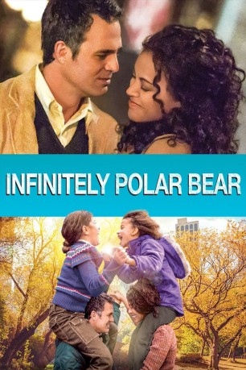
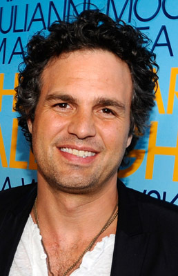
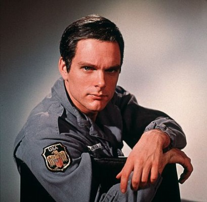
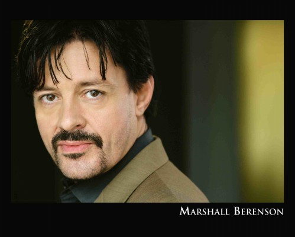

#3007 Infinitely Polar Bear
 
 IMDB-Wertung: 7.0 / 10
IMDB-Wertung: 7.0 / 10  Metascore: 64
Metascore: 64 
Cameron Stuart leidet unter einer manischen Depression. Um seine Frau Maggie zurückzugewinnen, bietet er trotzdem an, auf die beiden Töchter aufzupassen, während sie die Wirtschaftshochschule besucht. Amelia und Faith sind zunächst wenig begeistert, von ihrem mal vollkommen überdrehten, mal aggressiven und mal völlig am Boden zerstörten Vater betreut zu werden. Doch je mehr Zeit die drei zusammen verbringen, desto stärker wachsen sie trotz seiner Stimmungsschwankungen wieder zu einer Familie zusammen.
Jahr: 2014
Dauer: 88 Minuten
FSK: 6
Land: USA Studio: Sony Pictures ClassicsTonspuren: DD5.1 - ,
Untertitel: Deutsch,
Auflösung: 1080p (1920x1040) Größe: 10649 MB
Genre: Drama, Komödie
Regisseur: Maya Forbes
Drehbuch: Maya Forbes
Soundtrack: Theodore Shapiro
Darsteller:
-  Mark Ruffalo als Cam Stuart
 Zoe Saldana als Maggie Stuart
Zoe Saldana als Maggie Stuart- Imogene Wolodarsky als Amelia Stuart
- Ashley Aufderheide als Faith Stuart
- Manoah Angelo als Thurgood
- Beth Dixon als Pauline Stuart
-  Keir Dullea als Murray Stuart
- Chris Papavasiliou als Mr. Fabrini
- Liam McNeill als Young Man 1
- Wallace Wolodarsky als Peter
- Mark S. Cartier als Maitre d'
- Alicia Love als Carol
- Mary O'Rourke als Receptionist
- Grant George als Additional Voices #1
- Jessica Gee als Additional Voices #2
 Brianne Brozey als Additional Voices #3
Brianne Brozey als Additional Voices #3-  Marshall Berenson als Business Man in Bar , uncredited
- Gracie Marie Bradley als Student , uncredited
- Danny Connelly als Security Guard , uncredited
- Tovah Duffaut als School child , uncredited
- Mike Jablon als Unfriendly Houseguest , uncredited
- Haley Pine als School Kid , uncredited
- Christopher S. Porter als Bar Patron , uncredited
- Kathryn Shasha als Teacher , uncredited
- George J. Vezina als Joe - Institution Patient , uncredited
- William Xifaras als Bus Driver , uncredited
- Nekhebet Kum Juch als Kim
- Muriel Gould als Gaga
- Tod Randolph als Ruth-Ann
- Georgia Lyman als Becca
- Paul Elias als Dick
- Patrick Shea als Business Man 1
- Wendy Forbes als Maid
- Clementine Wolodarsky als CFS Teammate
- Jill Forney als Lacrosse Coach
- Uatchet Jin Juch als Ali
- Keith Anthony als Additional Voices #4
- Victor Franko als Police Officer , uncredited
- Steven Howitt als Restaurant Patron , uncredited
- John Joseph Lindsey als Pedestrian Avoiding Car , uncredited
- Phyllis Lynn als Pedestrian , uncredited
- Benjamin Manoli als Boy Reading , uncredited
- Moses Millman als Student , uncredited
- Gary Roscoe als Restaurant Patron , uncredited
- Nicole Sarmiento als School Child , uncredited
- Michael Underhill als Young Businessman , uncredited
- David Weindel als Homeless Friend , uncredited
Datei: X:\2014(G-M)\Infinitely Polar Bear (2014, FSK6, 1920x1040).mkv seit 19.01.2016
Festplatte: HD 2013(I-Z)-2014(A-Z)
 Es gibt insgesamt 136 Filme in der Gruppe '2014(G-M)'
Es gibt insgesamt 136 Filme in der Gruppe '2014(G-M)'